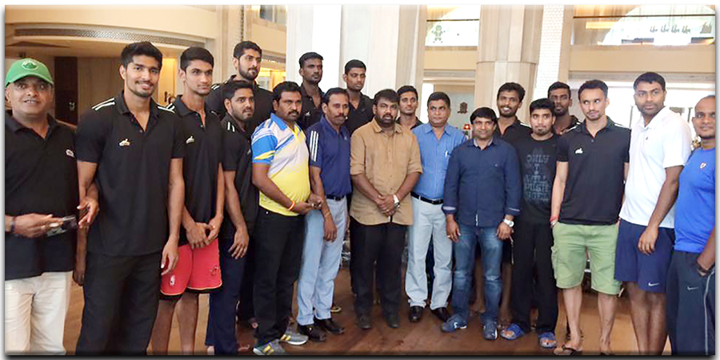
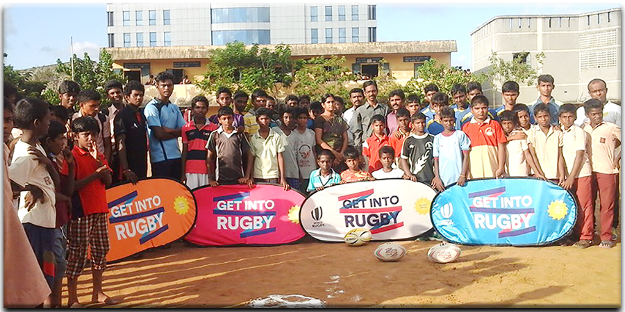

V.V.R. Raj Satyen
Aiadmk IT Wing Secretary
by V.V.R. Raj Satyen

What happens on candidates go against opponents? –Mr.V.V.R.Raj Satyen
There is always a perspective which we believe, why candidates go negative against their opponents? The simple answer is because it works. Negative ads create fear, doubt and uncertainty about an opponent. We believe that negative campaign ads are more memorable than positives ones, and campaign sustainability and politics believe in their power. The brand reputation is also built in the system. Mr.V.V.R.Raj Satyen’s team are geared with know how knowledge on how the campaigns to be evaluated and modified.
The media and political strategist works closely on the issues of the candidate and creates the data. Which in turn worked on to promote aggressive or in a subtle campaign. The brand reputation is created with various software, which are used efficiently and the data is stored and effectively used.
Read MoreTamilnadu Basketball Association
by V.V.R. Raj Satyen

Tamilnadu Basketball Association or TNBA is the governing and controlling body of basketball in Tamilnadu, and is responsible for the development and promotion of the sport at all levels in the state.TNBA is affiliated to BFI (Basketball Federation of India), TNOA (Tamilnadu Olympic Association) and is recognised by SDAT (Sports Development Authority of Tamilnadu).
Read MoreTamilNadu Rugby Football Union
by V.V.R. Raj Satyen

Mr.Raj Satyen, president, TamilNadu Rugby Football Union said, “The Government of TamilNadu and SDAT have been continuously supporting various International and National sporting events and disciplines in the state. With such International Tournaments and support from Asia Rugby India, Rugby in TamilNadu will grow exponentially in the coming years.
Read MoreBlog Search
Social Entrepreneurship
V.V.R. Raj Satyen has formed ConsoTree with the support of experts and elites of Madurai;ConsoTree is a robust social enterprise platform designed not-profit (NPO).